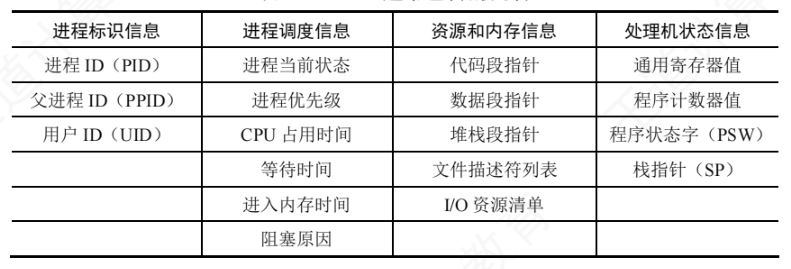
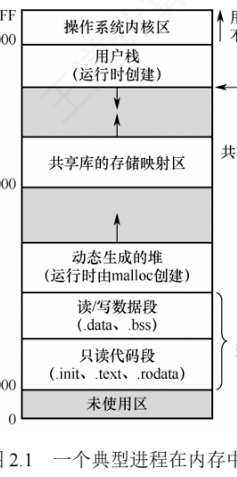
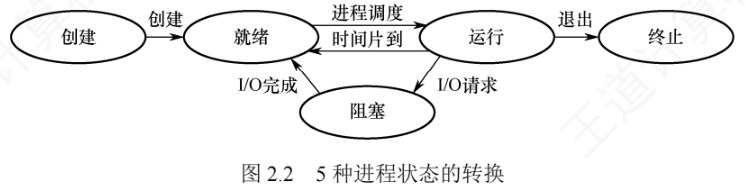
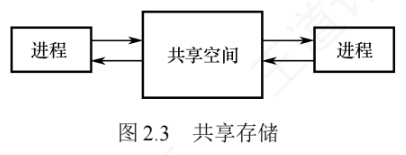
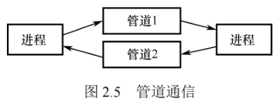
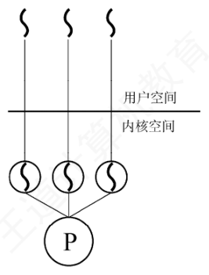
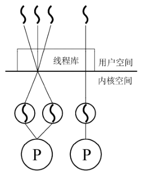
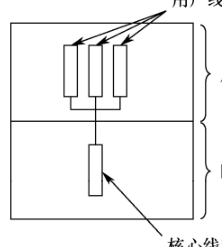
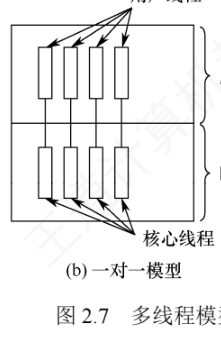
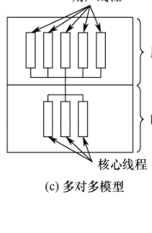

2.1 进程与线程简介
进程管理是操作系统的核心，也是每年必考的重点。学习本节前，请先带着三个问题：为什么要引入进程？什么是进程、进程由什么组成？引入进程主要解决了多道程序并发执行中的哪些关键问题？学完本节后回到这三个问题，检验自己能否独立作答。
2.1.1 进程的概念和特征
1. 进程的概念
在多道程序环境下，多个程序并发执行，而并发性破坏了程序原有的封闭性：执行过程呈现间断性，执行结果也可能不可再现。为了有效描述和控制程序的并发行为，操作系统引入了进程（Process）这一核心概念，用它来支撑操作系统的两大基本特性——并发性与共享性。
要让一个参与并发执行的程序能独立运行，必须为它配置一个专门的数据结构，即进程控制块（Process Control Block，PCB）。操作系统通过 PCB 记录进程的基本信息和运行状态，从而实现对进程的控制与管理。通常把程序段、相关数据段和 PCB 三者共同构成的整体称为进程实体（也称进程映像）。由此得到一个重要结论：创建进程的本质是创建它的 PCB；相应地，撤销进程就是释放该 PCB 及相关资源。
从不同视角出发，进程有几种比较典型的定义：
- 进程是正在执行的程序实例；
- 进程是程序及其数据从外存加载到内存后，在 CPU 上运行的过程；
- 进程是具有独立功能的程序在一个特定数据集合上的执行活动。
传统操作系统给出的正式定义是：「进程是进程实体的运行过程，是系统进行资源分配和调度的一个独立单位。」注意定义中的「资源」不仅包括内存空间、I/O 设备等硬件资源，也包括 CPU 的使用权（通常通过时间片的分配来实现）。也正因为进程是资源分配与调度的基本单位，它必然不是静态的程序，而是一个动态的、具有生命周期的过程性实体。
2. 进程的特征
进程源于多道程序并发执行的需求，与静态的程序有本质区别，其核心特征有四个：
- 动态性：进程是程序的一次执行实例，有明确的生命周期，会经历创建、就绪、运行、阻塞、终止等状态变化。动态性是进程最根本的特征，也是区分进程与静态程序的关键。
- 并发性：多个进程可同时驻留内存，并在一段时间内交替或并行执行。引入进程的根本目的，正是为了支持程序的并发执行。
- 独立性：进程是能够独立运行、独立获取系统资源，并作为调度基本单位参与 CPU 竞争的实体；任何未建立 PCB 的程序，都不能被操作系统调度执行。
- 异步性：进程相互制约，以不可预知的速度向前推进。异步性可能导致执行结果不可再现，因此操作系统必须提供相应机制（如同步）来协调进程行为，确保执行正确。
2.1.2 进程的组成
进程是操作系统进行资源分配和调度的基本单位，由程序段、数据段和进程控制块（PCB）三部分共同构成，其中 PCB 是最核心的组成部分。
1. 进程控制块（PCB）
进程创建时，操作系统为它分配一个 PCB；PCB 常驻内存、可随时被系统访问，进程终止时被回收。PCB 是进程存在的唯一标志——系统唯有通过 PCB 才能感知并管理进程。在进程的整个生命期内，对进程的一切操作都离不开对 PCB 的访问与更新：调度前从 PCB 读取当前状态、优先级等信息；进程被选中后，根据 PCB 保存的 CPU 上下文（寄存器值）恢复执行现场，并按其中记录的内存地址定位程序段和数据段；运行中涉及同步、通信或访问文件，也要查询 PCB 中的资源信息；进程暂停时，当前 CPU 状态保存回 PCB；进程终止时，PCB 被回收，进程随之消亡。
PCB 主要包含四类信息（教材表 2.1）：

| 信息类别 | 主要内容 | 作用 |
|---|---|---|
| 进程标识信息 | 进程 ID（PID）、父进程 ID（PPID）、用户 ID（UID） | 唯一标识一个进程及其归属关系；UID 为资源共享与安全保护提供依据 |
| 进程调度信息 | 进程当前状态、优先级、CPU 占用时间、等待时间、进入内存时间、阻塞原因 | 当前状态是分配 CPU 的基本依据；优先级决定抢占 CPU 的能力；统计信息与阻塞原因用于调整调度策略及后续唤醒 |
| 资源和内存信息 | 代码段/数据段/堆栈段指针、文件描述符列表、I/O 资源清单 | 记录进程占用的内存区域与各类系统资源 |
| 处理机状态信息 | 通用寄存器、程序计数器、程序状态字（PSW）、栈指针（SP） | 即 CPU 上下文：进程切换出 CPU 时必须完整保存到 PCB，再次调度时恢复至 CPU，从而从中断处继续执行 |
实际系统中通常同时存在大量进程——有的就绪、有的阻塞且阻塞原因各异。为高效调度管理，需要把各进程的 PCB 以适当方式组织起来，常用两种方法：
- 链接方式：把处于相同状态的 PCB 通过指针链接成队列，如就绪队列、阻塞队列；阻塞进程还可按阻塞原因（等待 I/O 完成、等待信号量等）进一步划分为多个阻塞子队列。
- 索引方式：为每种状态建立一个索引表（如就绪索引表、阻塞索引表），表项指向对应状态的 PCB。
2. 程序段
程序段是进程中可被 CPU 执行的代码部分。程序本身是静态的，可以被多个进程共享：例如多个用户同时运行同一个文本编辑器时，内存中只需保留一份代码副本，各进程通过各自的 PCB 指向该共享代码段，从而节省内存空间、提高系统效率。
3. 数据段
数据段包含进程运行所需的各种数据，既有程序处理的原始输入，也有执行过程中产生的中间结果和最终输出。与程序段不同，每个进程的数据段是私有的——即使多个进程运行同一程序，它们的数据段也彼此隔离。这种设计有效保障了进程间的独立性与安全性。
2.1.3 进程的内存映像
程序被加载运行时，操作系统会为它建立一个虚拟地址空间，该空间的逻辑布局称为进程的内存映像，它反映进程在运行时代码、数据、堆、栈等部分的组织方式。与磁盘上的静态可执行文件不同，内存映像是动态的；在虚拟内存机制（见 3.2 节）下，进程的整个地址空间也无须全部驻留物理内存——只有实际访问某一部分时，系统才通过缺页中断把它从磁盘调入内存。统考曾考查（2025）进程虚拟地址空间中各区域存放的内容，建议逐区掌握。
典型进程虚拟地址空间的组成
| 区域 | 存放内容 | 特点 |
|---|---|---|
| 只读代码段 | 机器指令：.init（启动时系统自动调用的初始化代码）、.text（main() 等主程序指令）、.rodata（字符串常量等只读数据） | 只读（防止运行时意外修改指令），可被多个进程共享 |
| 读/写数据段 | 全局变量与静态变量：.data 存已初始化的（如 int x=5;），.bss 存未初始化的（如 int y;） | 可读写，进程私有 |
| 堆 | 运行时动态申请的内存（malloc() 申请、free() 释放），如 int *ptr=(int*)malloc(4); 分配的 4 字节 | 从低地址向高地址增长，大小不固定，适合生命周期不确定的数据 |
| 共享库的存储映射区 | 进程依赖的公共函数代码（如 printf() 等标准库函数） | 运行时被动态映射到地址空间，只读且可多进程共享 |
| 用户栈 | 局部变量、函数参数、返回地址等临时信息（如调用 add(3,5) 时参数与返回地址压栈） | 由系统自动管理，遵循后进先出（LIFO），从高地址向低地址扩展 |
| PCB（不在用户地址空间内） | 进程的控制与管理信息 | 由内核维护，存放在操作系统内核区，对用户进程不可见 |

从图 2.1 可以看出：最高地址处是用户栈（随函数调用向下增长），其下方是共享库的映射区域；再往下是动态生成的堆（由 malloc() 等函数向上扩展）；堆下方是读/写数据段（.data 和 .bss），底部是只读代码段（.init、.text、.rodata）。注意：代码段和数据段的大小在程序加载时就已确定，而堆和栈可在运行过程中动态扩展和收缩。
2.1.4 进程的状态与转换
进程在生命周期中，由于与其他进程相互制约、系统运行环境不断变化，状态会不断转换。通常进程具有五种状态，其中前三种为基本状态：
- 运行态（Running）：进程正在 CPU 上执行。单 CPU 系统中，任一时刻最多只有一个进程处于运行态。
- 就绪态（Ready）：进程已获得除 CPU 以外的所有必要资源，一旦获得 CPU 便可立即投入运行。系统中可能有多个就绪进程，通常组织成一个就绪队列。
- 阻塞态（Blocked，等待态）：进程因等待某一事件（如某资源可用、I/O 操作完成等）而暂停运行，此时即使 CPU 空闲也无法执行。阻塞进程通常组织成阻塞队列，还可按阻塞原因进一步划分为多个子队列。
- 创建态（New）：进程正处于创建过程中，尚未进入就绪态。创建工作包括：申请空白 PCB 并填写控制管理信息→分配内存等运行所需资源→资源全部到位后转入就绪态并插入就绪队列。创建态是短暂的中间状态，正常情况下不会长期停留。
- 终止态（Exit）：进程已完成执行（无论正常结束还是被强制终止），正在等待系统回收资源；此时不再参与调度，但 PCB 等信息可能暂时保留，直至完成最终清理。
区分就绪态与阻塞态是本小节的关键：就绪态是「只缺 CPU」，一获得 CPU 就能立即运行；阻塞态是「缺 CPU 以外的资源，或在等待某个事件」。之所以把 CPU 与其他资源分开对待，是因为分时系统的时间片轮转机制中每个进程分得的时间片很短（通常几毫秒），进程会频繁地在运行态与就绪态之间切换；而外设等资源的分配、I/O 完成等事件往往耗时较长，进程进入阻塞态的频率远低于就绪态——两种等待在进程生命周期中性质完全不同。

结合图 2.2，把每个转换方向与触发条件整理成表：
| 转换 | 触发条件 | 性质 |
|---|---|---|
| 创建 → 就绪 | 创建工作完成：PCB 已填写、运行所需资源全部到位，系统将进程转入就绪态并插入就绪队列 | 系统完成创建 |
| 就绪 → 运行 | 被调度程序选中，获得 CPU 使用权（例如分到一个时间片） | 被动（被调度） |
| 运行 → 就绪 | 时间片用完，让出 CPU；此外在可剥夺（抢占式）调度系统中，若有更高优先级进程变为就绪，当前进程也会被强制切回就绪态 | 被动（被剥夺 CPU） |
| 运行 → 阻塞 | 通过系统调用请求某项服务（如发起 I/O 操作），而请求无法立即满足、需等待外部事件完成 | 主动（自身发起的系统调用触发）；并非所有系统调用都会导致阻塞，只有需要等待外部事件的操作才会引发 |
| 阻塞 → 就绪 | 所等待的事件发生（如 I/O 操作完成），由中断处理程序将其状态改为就绪态并重新插入就绪队列 | 被动（依赖外部事件发生或其他进程协助） |
| 运行 → 终止 | 正常结束，或因异常/外界干预被终止，进入终止态等待回收资源 | — |
2.1.5 进程控制
进程控制的功能是对系统中所有进程进行有效管理，主要包括创建新进程、撤销已有进程、实现进程状态转换等操作。这些控制操作通常以原语的形式实现：原语在执行期间不允许被中断，是一个不可分割的基本单位，从而保证关键操作的原子性和一致性。
1. 进程的创建
操作系统允许一个进程创建另一个进程：创建者称为父进程，被创建的进程称为子进程。子进程创建时会复制父进程的当前状态，包括程序代码、数据段、堆栈内容、打开的文件描述符、环境变量等；但子进程与父进程是相互独立的实体，拥有各自的 PCB 和虚拟地址空间（2020、2024 统考考查过父子进程的关系和特点）。
终端用户登录系统、作业调度启动批处理任务、系统提供服务、用户程序发起应用请求等，都会触发进程的创建。创建原语的具体步骤如下（2021 统考考查创建新进程时的操作；2010 统考考查导致创建进程的操作）：
- 分配唯一标识并申请 PCB：为新进程分配唯一的进程标识号（PID），并从系统 PCB 池中申请一个空白 PCB；若 PCB 资源耗尽，则创建失败，系统返回错误。
- 分配新进程运行所需的资源：如内存、文件、I/O 设备等（记录在 PCB 中）；这些资源或从操作系统获得，或从父进程继承。
- 初始化 PCB：内容包括标识信息、处理机状态信息、调度与控制信息、内存与资源信息；通常将新进程设置为最低优先级，除非用户显式提出高优先级要求。
- 插入就绪队列：若系统允许新进程参与调度，则将其 PCB 插入就绪队列，等待调度。
2. 进程的终止
引起进程终止的事件主要包括三类：
- 正常结束：进程完成预定任务后主动退出；
- 异常结束：运行中发生严重错误、无法继续执行，常见原因有存储区越界、非法指令、特权指令违规、算术运算错误、I/O 故障、运行超时等；
- 外界干预：由外部实体请求终止进程，如操作员强制终止、操作系统因资源不足或安全策略终止进程、父进程通过系统调用请求终止其子进程。
终止原语（2024 统考考查终止进程时的操作）的执行步骤：
- 根据被终止进程的标识符，检索其 PCB，并读取当前状态；
- 若该进程正处于运行态，立即剥夺其 CPU，并触发调度程序选择下一个就绪进程；
- 释放该进程占用的所有系统资源，统一归还给操作系统；
- 若系统支持级联终止，则递归终止其所有子孙进程；否则，子孙进程继续运行；
- 将该进程的 PCB 从所在队列（或链表）中移除，完成清理。
在某些系统中，一个进程终止时其所有子孙进程也必须随之终止，这种机制称为级联终止。但并非所有操作系统都采用这一策略：以 Linux 为例，父进程终止时其子进程不会被自动终止，而是由 init 进程（PID=1）收养，继续正常运行。
3. 进程的阻塞和唤醒
阻塞（Block）是进程的主动行为：正在运行的进程因等待某个外部事件（请求的系统资源暂时不可用、等待 I/O 操作完成、等待接收数据、等待信号量等）而暂时无法继续执行时，会主动调用阻塞原语，使自己从运行态转换为阻塞态。因此，只有处于运行态的进程才能执行阻塞操作（2018、2022、2023 统考考查进程阻塞的事件）。阻塞原语的执行过程：
- 保存当前进程的 CPU 现场（如程序计数器、状态寄存器等）到其 PCB 中；
- 将 PCB 中的状态字段修改为阻塞态，并把该 PCB 插入所等待事件的等待队列；
- 调用调度程序，从就绪队列中选择另一个进程投入运行，释放 CPU 资源。
唤醒（Wakeup）是被动行为：当被阻塞进程所等待的事件发生（如 I/O 操作完成、所需数据到达），由内核的中断处理程序或合作进程调用唤醒原语，将该进程重新激活（2014、2019 统考考查进程唤醒的事件）。唤醒原语的执行过程：
- 在指定事件的等待队列中找到目标进程的 PCB；
- 将其从等待队列中移出，并把状态置为就绪态；
- 将该 PCB 插入就绪队列，等待调度程序在适当时机选中并恢复其执行。
需要注意：Block 与 Wakeup 是一对作用相反的原语，必须成对使用。若某进程调用了 Block 进入阻塞态，而系统中没有任何机制调用对应的 Wakeup，它将永久停留在阻塞态、无法再被调度执行。设计并发程序时，必须确保每个阻塞操作都有相应的唤醒路径。
2.1.6 进程的通信
进程通信（IPC）是指进程之间的信息交换。按通信效率和数据量的不同，可分为两类：低级通信主要用于传递控制信息（如同步、互斥），典型代表是 PV 操作（见 2.3 节）；高级通信用于高效传输大量数据，主要包括共享存储、消息传递、管道通信和信号等方式。
1. 共享存储
进程的地址空间通常相互隔离，一个进程不能直接访问另一个进程的内存。为实现高效的数据交换，操作系统提供了共享存储机制：通过特殊的系统调用创建一段独立的内存区域，并将其映射到多个进程的虚拟地址空间中，使这些进程都能直接读写该区域来交换信息，如图 2.3 所示。

由于多个进程可能并发访问同一块内存，同步互斥机制必须由用户程序自行引入（如信号量的 P、V 操作），以避免数据竞争或不一致；操作系统只负责分配共享内存区并完成地址映射，不会自动提供同步保护，具体的读/写逻辑与同步控制均需用户程序自行设计实现。可以通俗地理解：甲和乙之间放着一个公共的大布袋，甲把要传递的物品放进布袋，乙再从中取出；乙不能直接伸手拿甲手里的东西，甲也不能直接取走乙的东西，所有交换都必须通过这个公共区域完成。
2. 消息传递
当进程之间没有共享内存、或出于安全等考虑不便使用共享存储时，可采用操作系统提供的消息传递机制：进程间的数据交换以格式化的消息（Message）为单位，通过操作系统提供的发送原语和接收原语进行。通信的底层细节被封装在内核中、对用户透明，从而简化了应用程序设计。消息传递是目前应用最广泛的进程间通信机制——微内核操作系统中微内核与服务器之间的交互正是基于它；此外它还很好地支持多处理器系统、分布式系统和计算机网络，是这些环境中的主流通信方式。
消息传递可分为两种基本模式：
- 直接通信方式：发送进程通过发送原语把消息发给指定的接收进程，内核负责把消息从发送方复制到接收方的内核缓冲队列中，接收进程再通过接收原语取走消息。
- 间接通信方式：通信双方不直接指定对方，而是通过一个中间实体——信箱——进行消息交换：发送进程把消息投递到信箱，接收进程从信箱中取出消息。
两种模式可以用寄信来类比：直接通信好比邮差把信件亲手交到乙本人手中；间接通信好比乙家门口设有一个邮箱，邮差只需把信投入邮箱，乙随后自行取阅。无论哪种方式，消息的投递都由「邮差」——操作系统内核——可靠完成。
3. 管道通信
管道通信是一种基于先进先出（FIFO）原则的进程间通信机制，常用于具有亲缘关系的进程（如父子进程）之间，以生产者—消费者模式进行数据交换（见图 2.5）。从编程接口上看，管道（Pipe）表现为一种特殊的共享文件，支持标准的 read() 和 write() 操作；但从实现上看，它并不是存储在磁盘上的文件，而是由操作系统内核维护的一块固定大小的内存缓冲区（如 64KB 的环形缓冲区，不会像普通文件那样无限制增长）。

为确保通信的正确性，管道机制必须提供三方面的协调能力（2014 统考考查管道通信的特点）：
- 互斥：任一时刻只允许一个进程对管道进行读或写操作，防止多个进程并发访问导致数据混乱；
- 同步：管道满时，写进程自动阻塞，直到读进程取走部分数据；管道空时，读进程自动阻塞，直到写进程向其中写入新数据；
- 写端关闭检测：写端关闭后，读端 read() 返回 0，表明无数据可读。
在 Linux 系统中，管道由父进程通过 pipe() 系统调用创建；由于子进程创建时会继承父进程的文件描述符表，因此能通过这些描述符访问同一管道，从而与父进程通信。若读进程的消费速度快于写进程，管道中的数据会被迅速读空，此时任何 read() 调用都会被阻塞，等待写进程再次写入——即管道的自动阻塞与唤醒由内核保证。
4. 信号
信号（Signal）是一种用于通知进程某个事件已发生的机制。不同的系统事件对应不同的信号类型，每类信号对应一个序号，例如 Linux 内核实现了约 30 种信号（编号通常为 1～30）。
内核在进程的 PCB 中用一个 n 位向量（Linux 使用一个 32 位整型变量）记录该进程当前待处理的信号：向某进程发送一个信号时，内核把对应位置 1；该信号被成功处理后，对应位清零。PCB 中还维护另一个 n 位向量，记录被阻塞（屏蔽）的信号——某位为 1 时，对应的信号不会被立即处理，而是暂存起来，直到解除阻塞。
信号的发送主要有两种方式：
- 内核发送：内核检测到特定的系统事件时，向相关进程发送相应信号。例如进程执行了非法指令，内核将向其发送 SIGILL 信号（序号为 4）；
- 进程发送：一个进程可以通过调用 kill() 函数，请求内核向指定进程（需提供目标进程的 PID 和信号序号）发送信号；进程也可以向自身发送信号。
处理时机：操作系统在从内核态返回用户态时（如系统调用结束），会检查当前进程是否存在未被阻塞的待处理信号；若存在，则立即处理其中一个信号（通常优先处理序号较小的信号）。处理方式有两种：
- 执行默认的信号处理程序：操作系统为每类信号预设默认操作，例如收到 SIGILL 信号的默认操作是终止进程；
- 执行进程自定义的信号处理程序：进程可以为某类信号定义自己的处理函数，例如定义收到 SIGILL 时不终止进程，而是输出一句提示语。
信号处理程序执行结束后，通常返回到原程序被中断的位置，继续执行后续指令。
2.1.7 线程和多线程模型
1. 线程的基本概念
引入进程的目的是使多道程序能够并发执行，从而提高资源利用率和系统吞吐量；而引入线程（Thread），则是为了进一步降低程序并发执行时的时空开销，提升操作系统的并发性能。线程可以被通俗地理解为「轻量级进程」，它是程序执行流的最小单元，也是处理器调度的基本单位。在多线程操作系统中，进程不再作为基本的执行实体，但仍保留与执行相关的状态——所谓进程处于「执行」状态，实际上是指该进程中的某个线程正在运行（2011、2019、2024 统考考查线程的特点）。线程的主要属性如下：
- 轻量级执行实体：线程本身不拥有独立的系统资源（如地址空间、打开的文件等），但拥有运行所必需的私有数据结构，包括线程 ID、程序计数器、寄存器集合和栈；每个线程都有唯一的标识符和一个线程控制块（TCB），记录其执行上下文（寄存器状态、栈指针等）。
- 共享代码段：同一进程中的多个线程可并发执行相同的程序代码。例如多个用户同时访问一个 Web 服务器时，服务器进程可创建多个线程，各自服务不同的用户请求，显著提升并发能力。
- 资源共享：同一进程内的所有线程共享该进程的代码段、数据段、堆、文件描述符等系统资源，使得线程间的通信和数据共享非常高效，无须复杂的进程间通信（IPC）机制。
- 独立调度单位：线程是 CPU 调度和执行的基本单位。单 CPU 系统中，多个线程通过时间片轮转等方式轮流使用 CPU；多 CPU 系统中，不同线程可并行运行于多个 CPU 核心上——若多个核心同时执行同一进程的不同线程，能显著缩短该进程的整体处理时间。
- 生命周期：线程从创建开始，经历就绪、运行、阻塞等状态变化，直至最终终止。
引入线程后，进程的内涵发生重要变化：进程成为除 CPU 以外的系统资源分配单位，线程成为 CPU 调度和执行的基本单位。当线程切换发生在同一进程内部时，由于地址空间等资源无须切换，其开销远小于进程切换。
2. 线程与进程的比较
| 维度 | 进程 | 线程 |
|---|---|---|
| 调度 | 传统操作系统中既是资源拥有者，也是独立调度的基本单位，每次调度都需完整的上下文切换，开销较大 | 线程是独立调度的基本单位；同一进程内的线程切换不会引起进程切换，但从「一个进程的线程」切到「另一个进程的线程」仍会触发进程切换 |
| 并发性 | 进程之间可并发执行 | 并发性显著增强：进程之间、同一进程内的多个线程之间、不同进程中的线程之间都能并发执行 |
| 拥有资源 | 进程是系统资源分配的基本单位 | 线程不拥有独立的系统资源，只拥有运行必需的私有数据结构；同一进程的所有线程共享该进程的地址空间及资源 |
| 独立性 | 每个进程拥有完全独立的地址空间，默认情况下其他进程无法直接访问其任何内存区域 | 一个进程中的线程对其他进程完全不可见；同一进程内的线程因共享地址空间而紧密协作，以提升并发性能 |
| 系统开销 | 创建/撤销需分配或回收 PCB、地址空间、I/O 资源等，切换涉及整个地址空间和资源上下文，开销显著；进程间同步与通信较复杂 | 创建/撤销仅需分配栈和少量内核对象，切换只需保存和恢复寄存器状态，开销很小；同进程线程共享地址空间，同步与通信非常容易实现 |
| 支持多处理器 | 单线程进程虽可在不同时间被调度到任意 CPU，但任一时刻只能在一个 CPU 上执行 | 多线程进程可把多个线程同时调度到多个 CPU 上并行执行，真正发挥多核处理器的性能优势 |
3. 线程的状态与生命周期
线程之间共享资源，并存在同步与互斥等制约关系，执行过程同样具有明显的间断性。相应地，线程在其生命周期中有三种基本状态——运行态（已获得 CPU，正在执行）、就绪态（已具备所有运行条件，只差 CPU）、阻塞态（因等待某一事件如 I/O 完成、锁释放而暂时无法执行）；这三种状态之间的转换与进程基本状态之间的转换是类似的。
线程具有完整的生命周期：由创建而产生，经调度而执行，最终因终止而消亡，操作系统为此提供相应的系统调用或库函数。用户程序启动时通常仅有一个初始线程，其主要任务是创建其他线程：调用线程创建函数并传入必要参数（指向线程主函数的入口地址、堆栈大小、调度优先级等），创建成功后系统返回唯一的线程标识符。调度器根据线程优先级等策略决定哪个线程获得 CPU；线程运行期间可能与其他线程进行同步或互斥操作，以保证数据一致性。
线程终止的原因有多种：正常执行完主函数、运行中发生未处理的异常被迫退出、主动调用线程终止函数、或被其他线程通过取消机制强制终止。在大多数操作系统中，线程终止后并不会立即释放所占用的资源——只有当进程中的其他线程执行了相应的分离操作后，被终止的线程才会与资源分离，其资源才能被系统回收并供其他线程使用；已被终止但尚未释放资源的线程仍可被其他线程调用，以使其重新恢复运行。
4. 线程控制块（TCB）
与进程类似，操作系统为每个线程维护一个线程控制块（Thread Control Block，TCB），用于记录和管理线程的运行信息（2024 统考考查线程的私有资源）。TCB 通常包含：
- 线程标识符（Thread ID）；
- 寄存器集合：程序计数器、状态寄存器和通用寄存器；
- 线程当前状态；
- 调度优先级；
- 线程局部存储区：保存线程私有的数据；
- 堆栈指针：指向该线程的私有栈，用于过程调用时保存局部变量、返回地址等。
同一进程中的所有线程共享该进程的地址空间和全局变量；每个线程拥有独立的私有栈，这些栈位于进程的地址空间内——因此从技术上讲，一个线程可以访问另一个线程的栈内容，但这种做法严重违反编程规范，会破坏线程封装性和程序正确性，实际开发中应严格避免。
5. 线程的实现方式
线程的实现可以分为两类：用户级线程（User-Level Thread，ULT）和内核级线程（Kernel-Level Thread，KLT），后者也称为内核支持的线程（2019 统考考查两种线程的特点与比较）。
（1）用户级线程（ULT）——「从用户视角看到的线程」：所有线程管理工作（创建、切换、撤销等）均由应用程序在用户空间（用户态）完成，无须操作系统介入，因此内核完全感知不到这些线程的存在。应用程序只需引入一个线程库，即可被开发为多线程程序：用户程序启动时仅包含一个初始线程，执行过程中它可在任意时刻调用线程库提供的创建函数，在同一进程中派生新的线程（教材图 2.6(a) 展示的用户级方式）。
采用用户级线程的系统中，调度仍以进程为单位：调度器只能感知进程，无法察觉进程内部的多个用户级线程，因此仅为整个进程分配一个时间片。举例来说，设时间片轮转调度下每个进程每次获得 100 ms 的 CPU 时间：进程 A 仅含 1 个用户级线程，可独享这 100 ms；进程 B 含 100 个用户级线程，若 B 内部采用简单的轮转调度，每个线程平均仅能获得 1 ms——进程 A 中线程获得的 CPU 时间是进程 B 中各线程的 100 倍。这种差异导致在多线程密集型任务中，不同进程间的线程实际执行效率极不均衡，系统层面体现出明显的调度不公平性。
这种实现方式的优点：①线程切换在用户空间完成，无须切换到内核态，避免了模式切换的开销；②调度策略可由应用程序定制，不同进程可根据自身需求采用不同的线程调度算法；③用户级线程的实现与操作系统无关，线程管理代码属于用户程序的一部分，具有良好的可移植性。缺点：①某个线程执行阻塞型系统调用时，整个进程会被内核挂起，导致进程中的所有线程均被阻塞；②无法发挥多处理器的并行优势——内核仅将该进程调度到一个 CPU 上执行，即使系统配备多个 CPU 核心，同一进程中的多个用户级线程也无法同时在不同 CPU 上并行运行，只能在单个 CPU 上交替执行。
（2）内核级线程（KLT）：无论是系统进程还是用户进程，都依赖内核的支持才能运行。内核级线程的管理完全由操作系统内核负责，所有线程相关的操作均在内核空间（内核态）完成；操作系统为每个内核级线程维护一个 TCB，内核通过该 TCB 感知线程的存在并对其进行控制。图 2.6(b) 展示了内核级线程的实现方式。

这种实现方式的优点：①能发挥多处理器的并行优势，内核可将同一进程中的多个线程同时调度到不同 CPU 核心上并行执行；②阻塞处理更灵活，若进程中的某个线程因系统调用被阻塞，内核仍可调度该进程中的其他线程运行，或切换到其他进程的线程继续执行；③内核自身可采用多线程技术，提升系统服务的并发性和整体效率。缺点：线程切换需从用户态陷入内核态——线程在用户态运行而调度由内核完成，每次切换都涉及模式转换和上下文的保存/恢复，系统开销较大。
（3）组合方式：某些系统采用组合方式（混合模型）实现多线程——内核支持多个内核级线程的创建与调度，同时允许用户程序在用户空间管理多个用户级线程。这种方式结合两种模型的优点、克服各自的不足：多个线程可在多 CPU 上并行执行；单个线程阻塞不会导致整个进程挂起；用户级线程切换又可在用户空间快速完成，减少内核介入。图 2.6(c) 展示了这种组合实现方式。

根据用户级线程与内核级线程之间映射关系的不同，形成了三种典型的多线程模型（图 2.7）：
1）多对一模型（图 2.7(a)）：将多个用户级线程映射到一个内核级线程，线程的调度和管理在用户空间完成。每个进程仅拥有一个内核级线程，仅当用户线程需要访问内核时才将其映射到该内核级线程上，且每次只允许一个线程进行映射。优点：线程管理在用户空间进行，无须切换到内核态，线程切换效率较高。缺点：任一用户级线程执行阻塞型系统调用时，整个进程都会被内核挂起；任何时刻最多只能有一个线程与内核交互，无法在多处理器系统中实现并行执行。

2）一对一模型（图 2.7(b)）：将每个用户级线程映射到一个独立的内核级线程，进程中的用户级线程与内核级线程一一对应，线程的调度由内核完成，需要切换到内核态。优点：当某个线程被阻塞时，内核可调度同一进程中的其他线程运行，支持真正的并发执行，且可在多 CPU 系统上并行运行。缺点：每创建一个用户线程，系统就必须创建一个对应的内核线程，导致较大的系统开销（如内核 TCB 占用内存、调度负担增加），限制了系统可支持的最大线程数。

3）多对多模型（图 2.7(c)）：将 \(n\) 个用户级线程映射到 \(m\) 个内核级线程（要求 \(n \ge m\)）；用户级线程由应用程序在用户空间调度，而内核级线程由内核调度到多个 CPU 上执行。其特点：既克服了多对一模型并发度低的缺陷，又避免了一对一模型资源开销过大的问题——用户级线程切换高效，同时支持多核并行与阻塞隔离。

（4）线程库（thread library）的实现
程序员通常通过线程库提供的 API 来创建和管理线程。线程库的实现主要有两种方式：
- 纯用户空间实现：线程库完全位于用户空间，所有代码和数据结构均在用户态，调用库函数仅触发本地过程调用、无须陷入内核——此类实现对应用户级线程模型；
- 内核支持实现：线程库的底层依赖操作系统内核，库中的 API 调用通常会触发系统调用，由内核完成实际的线程操作——此类实现对应内核级线程模型。
目前广泛使用的三种主流线程库：POSIX Pthreads（POSIX 标准定义的线程 API，具体实现可基于用户级或内核级线程）、Windows 线程 API（直接构建于 Windows 内核之上，属于内核级线程实现）和 Java 线程 API（允许在 Java 程序中直接创建线程；由于 JVM 运行于宿主操作系统之上，Java 线程通常通过调用宿主系统的线程库实现——在 Windows 上使用 Windows API，在类 UNIX 系统上则使用 Pthreads）。
2.1.8 本节小结
本节开头提出的三个问题，参考答案如下。
1）为什么要引入进程？
在多道程序环境下，多个程序并发执行并共享系统资源，运行过程中相互制约，表现出间断性、异步性和不可预测性；而传统的「程序」仅是一组静态的指令集合，无法反映其在内存中的动态执行行为——例如无法体现程序何时开始、何时暂停、如何与其他程序交互。为了准确刻画程序并发执行的动态特性，并为操作系统提供有效的管理机制，进程这一概念被引入。进程是程序并发执行的基本单位，也是操作系统进行资源分配和调度的实体。
2）什么是进程？进程由什么组成？
进程是一个具有独立功能的程序在其特定数据集上的一次执行过程。它是动态的、活动的实体：不仅包含程序代码，还包含当前的执行状态（如程序计数器的值、处理器寄存器的内容等）。一个进程实体由程序段、相关数据段和 PCB 三部分构成，其中 PCB 是进程存在的唯一标志，操作系统通过 PCB 感知并控制进程的整个生命周期。
3）引入进程主要解决了多道程序并发执行中的哪些关键问题？
- 失去封闭性：在缺乏进程机制的环境中，程序执行易受其他程序干扰（如共享内存被修改），导致行为不可控；进程通过地址空间隔离，为每个程序提供独立、受保护的执行环境，从而恢复一定程度的封闭性。
- 执行过程的间断性：程序可能因 I/O 请求、时间片用尽或调度决策而被中断；进程利用 PCB 保存和恢复执行上下文，确保中断后能准确、连续地继续执行。
- 结果不可再现性：在并发环境下，相同输入可能因执行顺序不确定而产生不同输出；进程的隔离机制与操作系统的调度策略共同保障了执行的可控性与结果的可再现性。
通过为每个程序建立独立的进程实体，操作系统得以高效实现调度、切换、资源分配与保护，显著提升系统资源利用率和并发处理能力。
一个帮助理解的类比：进程 = 人的生命历程
进程是一个抽象的逻辑实体，初学时感到模糊很正常。可以把进程类比为「人的生命历程」：生命历程是动态的、过程性的存在，而非静态的描述；进程同样不是一段固定的程序代码，而是一次正在执行的活动。研究生命历程必须先明确主体「人」；对应地，进程的主体是进程映像（程序段、数据段和 PCB 组成），其中 PCB 就如同人的「身份标识」，记录该进程的唯一身份与当前状态。人在一生中会经历出生、成长、奋斗、受挫、康复、衰老乃至离世；进程也在创建、就绪、运行、阻塞、终止等状态之间转换——例如一个人从「充满斗志」（就绪）进入「发奋图强」（运行）；遭遇挫折可能陷入「失落」（阻塞）；在他人鼓励下又重新「充满斗志」（回到就绪）。这正对应进程从就绪态转换为运行态、因等待事件进入阻塞态、事件发生后再次返回就绪态的典型状态迁移。
当然，任何类比都有其局限性：比喻有助于建立直觉，但不能替代严谨的技术定义。建议读者在借助类比形成初步理解后，回头重读本节前文的正式阐述——这种「感性认知→理性回归」的学习路径，往往能带来更深刻、更准确的理解。最后给出一点学习建议：许多同学过于关注定理和公式的应用而忽视基础概念的理解，但公式和定理的应用固然重要，唯有深入理解基础概念，才能真正透彻地掌握一门学科——进程正是这样一个必须吃透的奠基性概念。